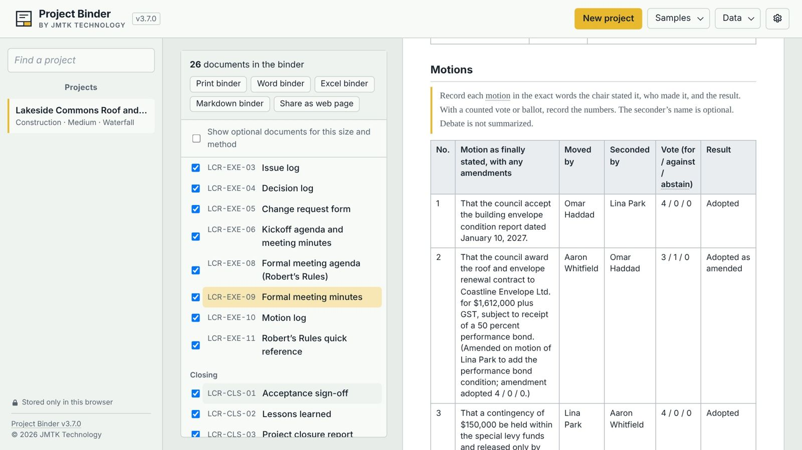
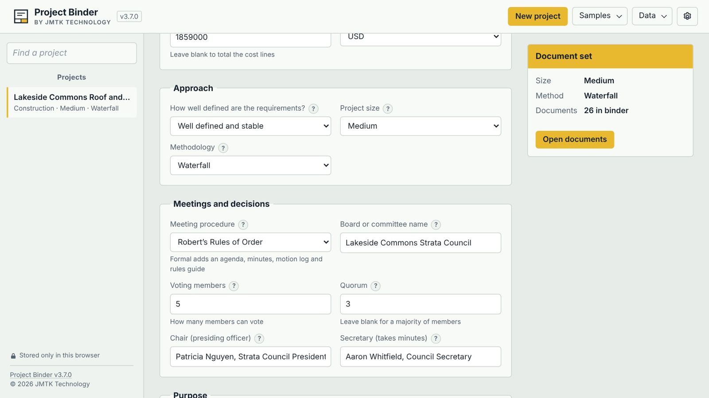
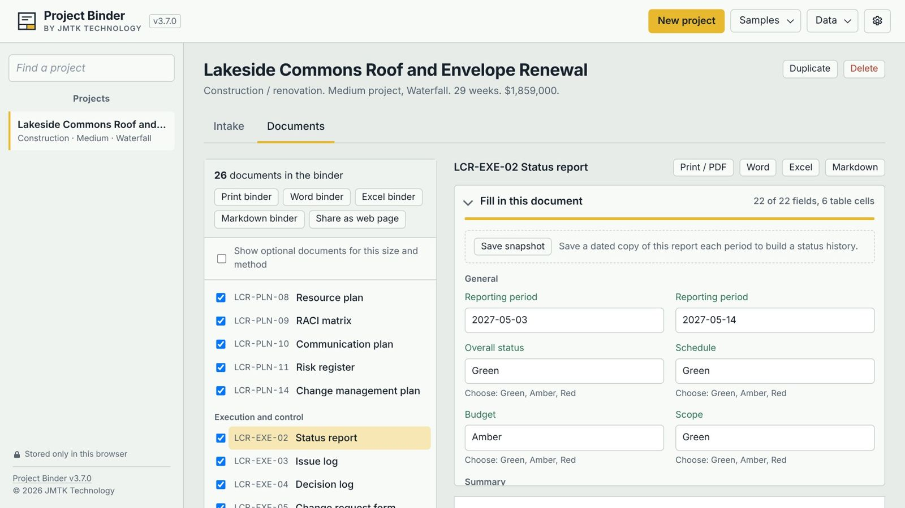
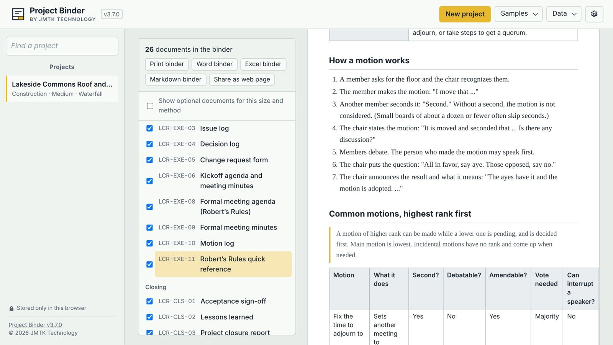
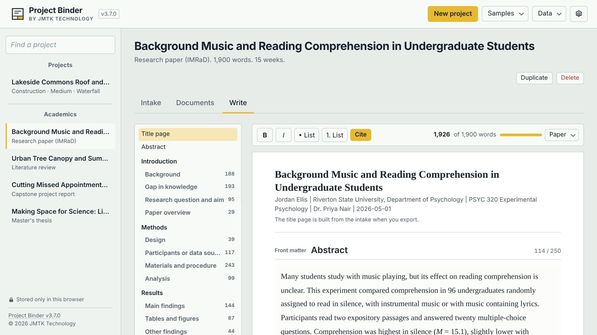
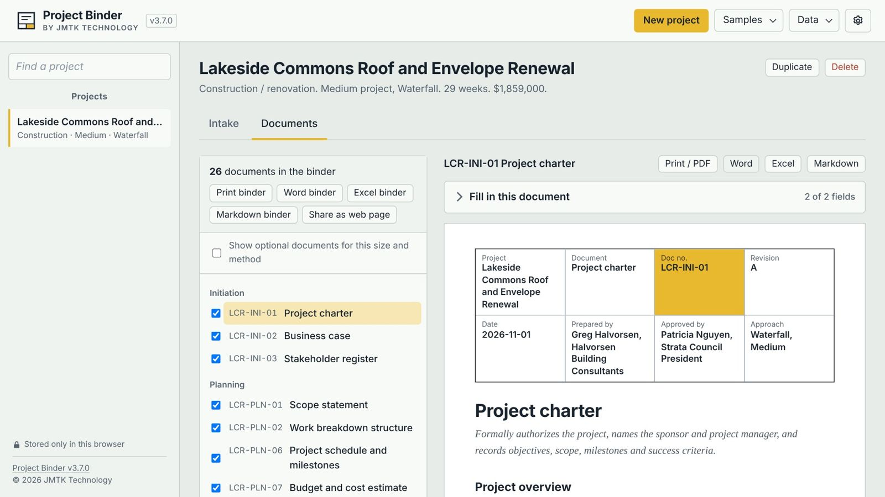

Answer one short questionnaire. Project Binder builds the right set of documents: formal agendas and minutes under Robert's Rules, project charters, schedules, budgets and risk registers, or a thesis framework with citations. Edit, print, or download Word, Excel, Markdown or a shareable web page.
Free during early access · Works offline · No account, no subscription · Your data stays on your computer

Who it's for
Board secretaries, project leads and students all spend hours building the same documents from scratch. Project Binder gives you a complete, right-sized set in minutes.
Run capital projects and meetings the way your bylaws expect.
Waterfall, Agile or Hybrid, sized from small to enterprise.
From high school essays to a PhD dissertation.
How it works
Describe the work once: the basics, timeline, budget, people, milestones and risks. Project Binder suggests the size and the approach, and every field has an example and a tip.
Boards switch on Robert's Rules of Order and set the quorum, chair and secretary.

Between 10 and 33 documents are chosen for the size and method of your project, numbered like a professional binder and filled in from your answers. Tick any others you need.
Fill in remaining blanks in the panel above each document. Tables grow as you add rows.

The Robert's Rules guide covers quorum, how a motion works, the rank of common motions, votes needed, and exactly what the chair says. Hover over terms like lay on the table to see what they mean.

Students get a framework built for their paper type, with guidance and links for every section, a word count target for each, and citations that format themselves in five styles.

Print or save as PDF, download Word or Excel, export Markdown, or share a read-only web page. Add your own logo, organization name and footer.

Demo
Built differently
A document builder for the person who prepares a project's, board's or paper's paperwork, with fill-in guidance and professional exports.
A shared task tracker. There's no team login or real-time collaboration: share what it makes as Word, Excel, PDF or a read-only web page.
Download
Version 3.6.0. Free during early access.
The first time you open it, your computer may show a warning because the app isn't signed with a paid certificate yet. See how to open it.
FAQ